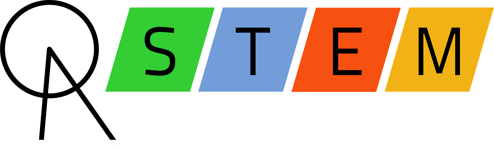

Our team isn't only an FRC team. In fact, we're not even only a robotics team. We are part of Oxford Academy STEM. Originally Robotics Club, occasionally referred to as RobEn, the past small team felt like they could be reaching out to more students. They had close relations with the principal of the time, who helped them succeed when no other teacher on campus had the time to help out the team.
While on a car trip, they came up with the idea to create what is now known as our school's STEM club, introducing a new academic competitive club on campus, alongside with Speech & Debate and Academic Decathlon. The previous Robotics Club could easily fill the role of Engineering, but they still needed to fill in for Science, Technology, and Mathematics.
OA STEM is mostly a student led team, with students being the directors who help interested students join competitions. Just a few years ago, the team was small enough to fit in a car or two. Now, OA STEM services over 100 students, attending many STEM related events, such as Science Olympiad, Progfest, Pepperdine Math Day, and of course, First Robotics Competition.
To find out more about Oxford Academy STEM, you can visit our main website, www.oastem.org.
